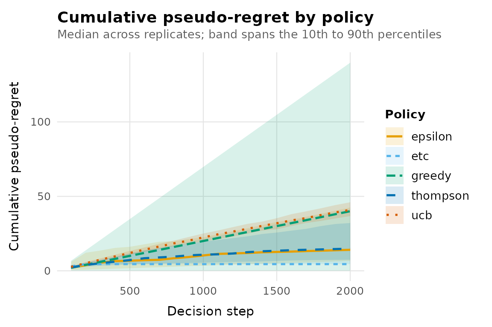

Comparing stochastic policies fairly requires more than running each once and ranking the totals. This vignette shows the workflow banditlab is built around: replication, paired randomness, explicit metrics and uncertainty on every summary.
What regret is, exactly
banditlab reports pseudo-regret: the cost, in expectation, of the
arms you chose relative to always choosing the best arm. If arm
a has true expected reward mu[a] and the best
arm has mu_star, each selection of a
contributes mu_star - mu[a]. See
?regret_definitions for all definitions. Regret requires
knowing the true expected rewards, which is exactly what simulation
gives you and deployment does not; that is why simulation is the right
place to compare policies.
A harder problem
Small gaps between arms make learning hard. Here the best arm is only 0.02 better than the runner-up.
env <- bandit_bernoulli(c(a = 0.10, b = 0.12, c = 0.05))
result <- run_experiment(
env,
policies = list(
greedy = policy_greedy(),
epsilon = policy_epsilon_greedy(0.1),
etc = policy_etc(explore_steps = 50),
ucb = policy_ucb1(),
thompson = policy_thompson()
),
horizon = 2000,
replications = 100,
seed = 2026,
checkpoints = seq(100, 2000, by = 100)
)
summary(result)
#> # A tibble: 5 × 8
#> policy replications mean_regret median_regret regret_q025 regret_q975
#> * <chr> <int> <dbl> <dbl> <dbl> <dbl>
#> 1 greedy 100 42.1 40.0 0.09 140.
#> 2 epsilon 100 20.4 14.1 5.84 54.1
#> 3 etc 100 17.8 4.5 4.5 41.5
#> 4 ucb 100 41.0 40.9 33.8 49.1
#> 5 thompson 100 17.0 14.9 5.43 38.0
#> # ℹ 2 more variables: mean_reward <dbl>, mean_optimal_share <dbl>Trajectories, not just totals
Final numbers hide when regret was accumulated. The band plot shows the median across replicates with a 10th to 90th percentile ribbon.
autoplot(result, metric = "cumulative_regret")
A flattening curve means the policy has effectively identified the best arm; a straight line means it is still paying a constant exploration tax.
Paired comparisons
Because every policy runs each replicate from the same random number
stream, per-replicate differences are paired.
compare_policies() returns the paired differences so that
between-replicate noise cancels.
cmp <- compare_policies(result, baseline = "epsilon")
head(cmp)
#> # A tibble: 6 × 6
#> policy baseline replicate policy_value baseline_value difference
#> <chr> <chr> <int> <dbl> <dbl> <dbl>
#> 1 greedy epsilon 1 139. 23.1 116.
#> 2 greedy epsilon 2 40.0 19.4 20.6
#> 3 greedy epsilon 3 0.09 6.05 -5.96
#> 4 greedy epsilon 4 2.21 42.0 -39.8
#> 5 greedy epsilon 5 140. 55.2 84.4
#> 6 greedy epsilon 6 0.09 7 -6.91Summarise them however you like; the distribution of differences is the honest answer to “which policy is better here”.
stats <- aggregate(difference ~ policy, data = cmp, FUN = function(x) {
c(mean = mean(x),
q025 = unname(quantile(x, 0.025)),
q975 = unname(quantile(x, 0.975)),
share_better = mean(x < 0))
})
stats
#> policy difference.mean difference.q025 difference.q975
#> 1 etc -2.57480 -46.51000 35.47975
#> 2 greedy 21.66380 -40.10600 132.49825
#> 3 thompson -3.35640 -41.66450 24.52100
#> 4 ucb 20.65030 -13.12750 39.99750
#> difference.share_better
#> 1 0.75000
#> 2 0.53000
#> 3 0.50000
#> 4 0.16000For cumulative_regret, a negative difference means the
policy beat the baseline in that replicate, and
share_better is the fraction of replicates where it
did.
Do not crown a universal winner
Rankings depend on the environment: the reward gaps, the horizon, the noise. A policy that wins here can lose under a shorter horizon or a different gap structure. Sweep the conditions before concluding anything; the engine makes that cheap.
short <- run_experiment(
env,
policies = list(etc = policy_etc(50), thompson = policy_thompson()),
horizon = 200, replications = 100, seed = 2026
)
summary(short)
#> # A tibble: 2 × 8
#> policy replications mean_regret median_regret regret_q025 regret_q975
#> * <chr> <int> <dbl> <dbl> <dbl> <dbl>
#> 1 etc 100 4.86 4.5 4.5 5.5
#> 2 thompson 100 3.97 3.92 2.07 6.43
#> # ℹ 2 more variables: mean_reward <dbl>, mean_optimal_share <dbl>Explore-then-commit with 50 exploration pulls per arm spends 150 of 200 steps exploring; the same configuration that was competitive at horizon 2000 is dominated at horizon 200. The lesson generalises: report the conditions with the conclusion.